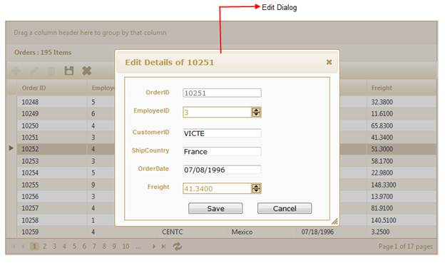

This feature allows you to edit various fields of a single record at the same time.
The following figure gives you a basic idea of the structure and appearance of Grid in the Dialog edit mode:

Figure 181: Dialog Editing in Grid
The Dialog Edit feature allows you to edit data, using a dialog box, which contains fields associated with the data record being edited.
You can edit data in two ways using this feature:
· Using the Dialog mode—This allows you to edit data of a particular record using the Dialog box. You can only edit the data stored in the fields that you have rendered to be visible.
· Using the Dialog Template mode—This allows you to create a template for the data that you require to be edited using the Dialog Box.
This means you can edit any of the fields pertaining to a single record of data and apply it to a template so that the same format is applied for all the other records that you will edit later.
Use Case Scenario
The user can edit fields that are associated with a single data record, using the dialog box that appears.
Where do I find Installed samples?
To view the samples:
1. Click Dashboard.
2. Click the drop-down button of MVC platform.
3. Click the Run Locally Installed Samples link. The Essential Studio MVC Edition sample browser is displayed.
4. Select Grid.

Figure 182: MVC Grid Sample Browser
5. Select any sample from Dialog editing under the Editing tab and browse through the features.
 Properties and Events Tables
Properties and Events Tables